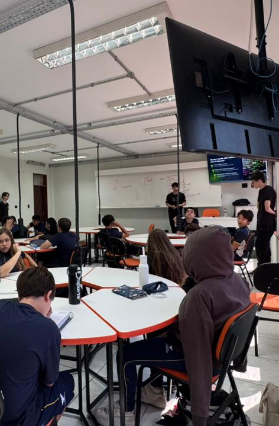

Relatório – 4ª Aula
Data: 23/03/2026
Turma: 8º e 9º ano
Instrutor: Kawan
Relatório – A Tríade da Web e internet
No dia 23/03/2026, foi realizada a terceira aula com as turmas do 8º e 9º ano do Ensino Fundamental, dentro do cronograma do projeto LondrinenseTech. Embora eu não tenha podido comparecer presencialmente nesta data específica, o conteúdo ministrado seguiu o planejamento pedagógico focado nas tecnologias que compõem a internet.
A aula, conduzida pelo instrutor Kawan, teve como eixo central a "Tríade da Web". De acordo com o material didático, foi explicada a divisão de funções entre HTML (estrutura), CSS (estética) e JavaScript (interatividade). O foco maior foi introduzir o JavaScript como a ferramenta que permite ao site responder às ações do usuário, tirando a página da estática e trazendo dinamismo através de funções e comandos iniciais.
O conteúdo teórico foi reforçado por uma atividade prática prevista no material, intitulada "Quem é Quem?". Nesta dinâmica, os alunos foram desafiados a identificar qual das três tecnologias seria responsável por situações específicas de um site, como a exibição de alertas (alert) ou a criação de títulos. Essa etapa foi essencial para que os estudantes compreendessem a aplicação lógica de cada linguagem no desenvolvimento de interfaces.

Conclusão
O encontro cumpriu o cronograma ao apresentar as bases do desenvolvimento web. Mesmo com a minha ausência, o registro do conteúdo demonstra que o objetivo de introduzir o pensamento computacional aplicado ao JavaScript foi atingido, preparando os alunos para a criação de elementos funcionais e interativos nas próximas sessões do projeto LondrinenseTech.